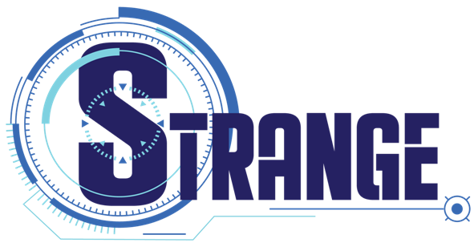

Direktori tugas:
@filepath
Batas kesamaan:
@threshold %
Pasangan kode mencurigakan:
@numsuspected
Hasil kesamaan:
Pasangan kode  |
Avg sintaks |
Max sintaks |
Avg komentar |
Max komentar |
Aksi |
|---|